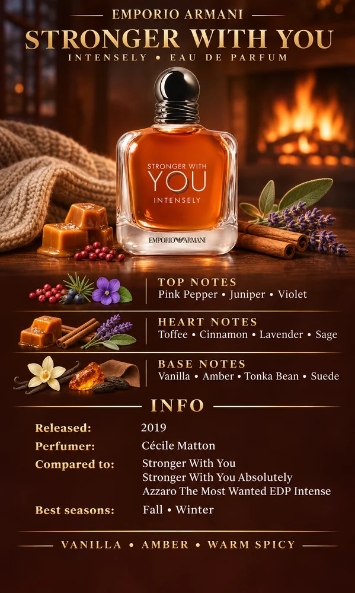
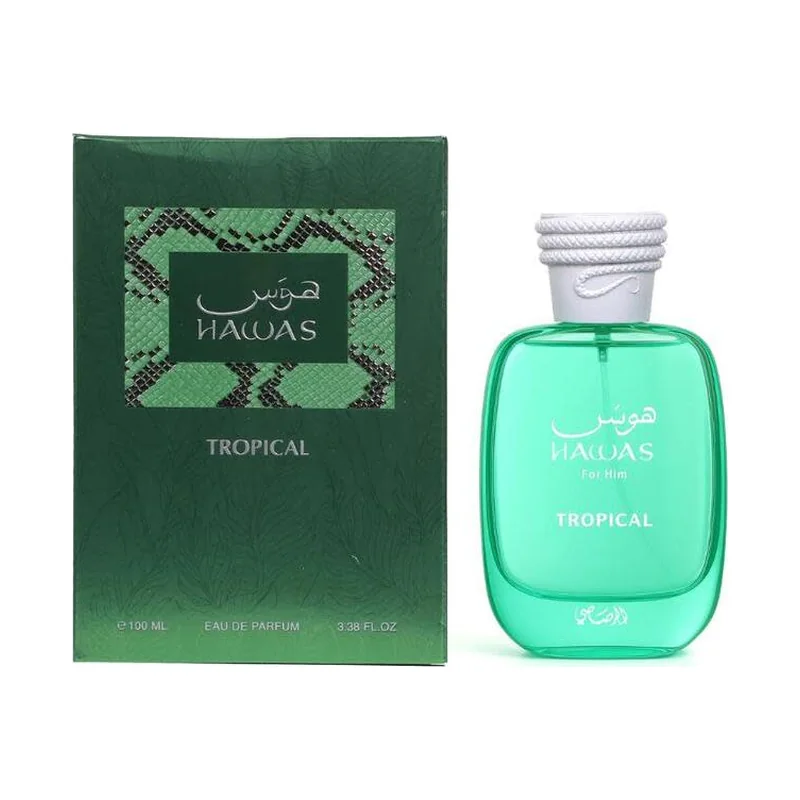

Emporio Armani
Stronger With You Intensely Eau de Parfum
β Beta Designer · Eau de Parfum · 2019 In collection
Randy's rating8.5/10
Public rating9/10
Overall R21.85/25
Normalized N0.874
R = 8.5 × 1.3 + 9 × 1.2 = 21.85 of 25 · N = 21.85 ÷ 25 = 0.874 How scores work
Notes
Top notes
- pink pepper
- juniper
- violet
Heart notes
- toffee
- cinnamon
- lavender
- sage
Base notes
- vanilla
- amber
- tonka bean
- suede
Details
| House | Emporio Armani |
|---|---|
| Type | Designer · β Beta |
| Concentration | Eau de Parfum |
| Released | 2019 |
| Perfumer | Cécile Matton |
| Scent family | Sweet & Gourmand, Aromatic, Spicy |
| Best seasons | Fall, Winter |
| Similar to | Emporio Armani Stronger With You Emporio Armani Stronger With You Absolutely Azzaro The Most Wanted Eau de Parfum Intense |
Sources
Fragrantica 4.57/5 (about 9.1/10) from 27,900 votes; Parfumo 8.3/10 from 5,397 ratings, ranked #11 in men's. Sweet toffee-cinnamon date-night staple; rounded to 9. Checked 2026-11-06.
Other Suggestions
-
 Jean Paul GaultierLe Male Le ParfumRandy8.75Public 9N 0.887
Jean Paul GaultierLe Male Le ParfumRandy8.75Public 9N 0.887 -
 Parfums de MarlyAlthaïrRandy8.5Public 9N 0.873
Parfums de MarlyAlthaïrRandy8.5Public 9N 0.873 -
 Jean Paul GaultierLe Beau Narcisse Eau de ParfumRandy8.25Public 8N 0.813
Jean Paul GaultierLe Beau Narcisse Eau de ParfumRandy8.25Public 8N 0.813 -
 XerjoffXJ 1861 Naxos Eau de ParfumRandy—Public 9N —
XerjoffXJ 1861 Naxos Eau de ParfumRandy—Public 9N — -

RasasiHawas Tropical Eau de ParfumRandy—Public 9N —